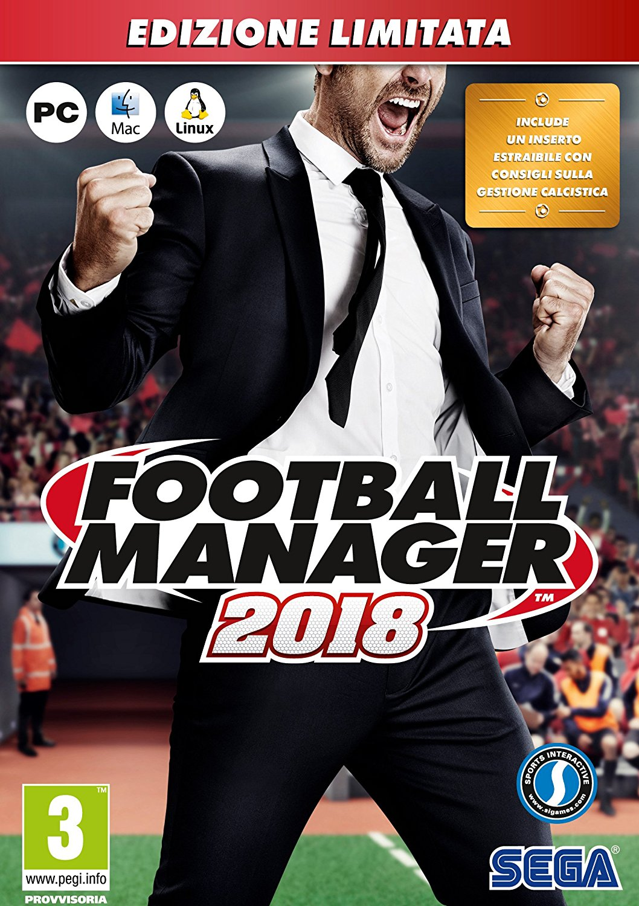

I am currently working as a consultant for an accounting firm. I got a computer science degree but have not done any programming since my graduation. I want to get back to coding again so I have decided to take half year off work and study programming. This is the first of three programming courses I plan to take. After completing the courses, I want to get into the tech industry.
Crusader Kings IICrusader Kings II is a medieval grand strategy game that has players vying to establish and expand their kingdoms across multiple generations during a time of great political and military strife. |
|
Europa Universalis IVThe empire building game Europa Universalis IV gives you control of a nation to guide through the years in order to create a dominant global empire. Rule your nation through the centuries, with unparalleled freedom, depth and historical accuracy. |
|
|  |
Football ManagerFootball Manager is a series of football management simulation games developed by Sports Interactive and published by Sega. The game began its life in 1992 as Championship Manager. |